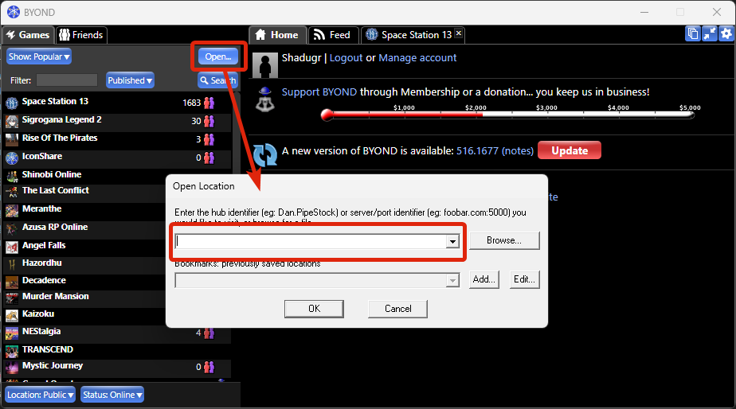

Как зайти на сервер
Подключение к игре
Для игры на нашем сервере тебе понадобятся две вещи: ZeroTier/RadminVPN (для имитации локальной сети) и клиент BYOND.
Настройка имитации локальной сети
Для игры мы используем ZeroTier или Radmin VPN. Советуем ставить ZeroTier — он обычно стабильнее. Если же с ним что-то пойдет не так, всегда можно переключиться на RadminVPN
ZeroTier
- Скачайте и установите клиент ZeroTier.
- Запустите Zerotier fix от имени администратора. Когда программа предложит настроить MTU, выберите No.
- В трее нажмите правой кнопкой мыши на иконку ZeroTier и выберите Join New Network.
- Введите идентификатор сети:
019e557882ad497c - Нажмите кнопку Join.
⚠ Финальный шаг
Напишите пользователю @sherekhanromeo в канале #cm-чатик, чтобы он подтвердил вашу заявку в сети ZeroTier.
RadminVPN
- Скачайте и установите программу с официального сайта.
- Запустите её и выберите: Сеть → Присоединиться к сети.
- Введите данные для входа:
- Имя сети:
DFка - Пароль:
000000
- Имя сети:
- Нажмите кнопку Подключиться.
Вход на сервер
- Скачайте клиент BYOND по ссылке.
- Установите его, а затем обязательно полностью закройте (проверьте системный трей) и запустите снова.
- Если у вас нет аккаунта, зарегистрируйтесь здесь.
- Логинимся: Нажмите кнопку логина в правой части клиента.

- Заходим на сервер: Нажмите кнопку Open, вставьте адрес сервера или выберите его из закладок.

Информация о сервере
✔ Адрес для подключения
Если используете ZeroTier:
Если используете RadminVPN:
(Скопируйте и вставьте в BYOND: Open → URL)
byond://172.30.31.201:7777Если используете RadminVPN:
byond://26.174.60.22:7777(Скопируйте и вставьте в BYOND: Open → URL)
Проведение игр и график
На сервере принята ивентовая система проведения сессий. Это значит, что игры организуются по мере возможности, а фиксированного ежедневного расписания нет.
ℹ Где следить за сборами?
Точная дата и время каждого ивента публикуются заранее. Чтобы не пропустить игру, обязательно
заглядывайте в канал #cm-инфо в нашем Discord!